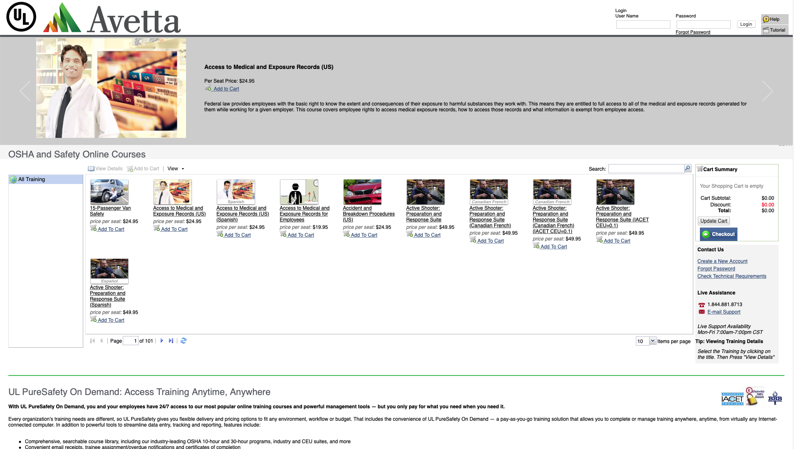
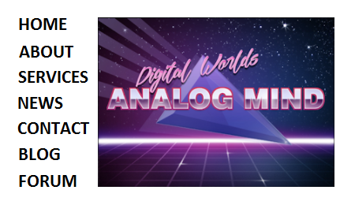
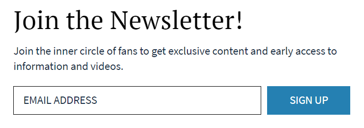
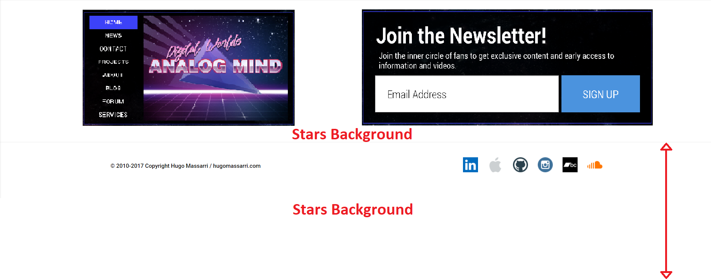
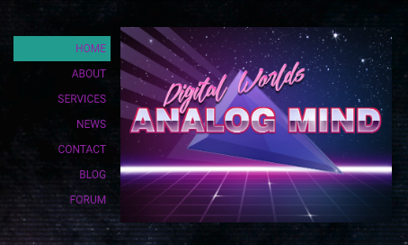

UX Project: Website Redesign
Problem Statement:
Need to revamp the landing page of the site to maintain current customers, attract new ones, and increase revenue
Vision:
Create a clean looking modern responsive front end that could be easily updated and provide an engaging and positive experience to the user, in addition to automating sections of the site for easier maintenance
-
Problem
The current landing page of the site was dated, hard to read, hard to navigate, information was buried, and not responsive in anyway
The approach was to not redefine an entire workflow because the time to redesign was limited however, some elements of the site needed a complete retune.
Also, another requirement was to use the images that were already issued which, at their highest size were at 360x240.
The stakeholders also let me know that their search capabilities were going to be expanding on the back end which they wanted the end user to take advantage of
 -
Research
With some brainstorming with Matt, the following concepts were created.
Matt created the image in the nav box and we decided in order to save room that the links would be best placed on the left hand side.
In order to get the attention of the visitor, the heading of "Join the Newsletter" needed to be big and in a different font to make it stand out. The action that we wanted for the user here was simple to the point: Enter your email address. Press the "Sign Up" button.
 -
Analysis
Matt wanted to expand more and I suggested to changed the color of the background, but to go a step futher and give it some depth in order to really bring attention to it.
Since Matt is a hardcore Sci-Fi author of many books, a stars background was created and we gave it some depth and textture by applying some static lines over it, done in Photoshop.
 -
Wireframes
The final result that went into production.
There was a final font change at the end. The original serif font that we chose did not work, and it wasn't tying the whole site together. It was missing the "sci-fi" feel, so we decided it was best to keep the fonts uniform which tied up the footer nicely.
Since this has been in production, Matt's newsletter has been on a monthly rotation, gaining a wide following worldwide. His website and blog now hit over 100,000 visits per month regularly.
 -
Development
The final result that went into production.
There was a final font change at the end. The original serif font that we chose did not work, and it wasn't tying the whole site together. It was missing the "sci-fi" feel, so we decided it was best to keep the fonts uniform which tied up the footer nicely.
Since this has been in production, Matt's newsletter has been on a monthly rotation, gaining a wide following worldwide. His website and blog now hit over 100,000 visits per month regularly.
-
Final
The final result that went into production.
There was a final font change at the end. The original serif font that we chose did not work, and it wasn't tying the whole site together. It was missing the "sci-fi" feel, so we decided it was best to keep the fonts uniform which tied up the footer nicely.
Since this has been in production, Matt's newsletter has been on a monthly rotation, gaining a wide following worldwide. His website and blog now hit over 100,000 visits per month regularly.